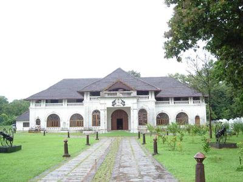

Thrissur is a city in the south Indian state of Kerala.
It's known for sacred sites and colorful festivals.
In the center is Vadakkumnathan Temple, dedicated to Lord Shiva and adorned with murals.
The ornate, Indo-Gothic Our Lady of Dolours Basilica is nearby.
To the north, Thiruvambady Temple is home to several elephants.
Sakthan Thampuran Palace houses an archaeology museum with bronze statues and ancient coins.
Athirapally Falls

Located 60 km from the Thrissur district of Kerala, Athirapally Falls is a marvellous cascade of frothy waters that makes its way from the Anamudi mountains of the Western Ghats.
Also called as Bahubali Waterfall, this 80 ft high and 330 ft wide marvel is the largest waterfall in Kerala.
It is often referred to as the "Niagara Falls of India".
Vadakumnathan Temple

With a collection of beautiful Mural paintings, some of which are more than 400 years old,
this gigantic 1000 year old temple and historical structure is famous for the Nataraja Mural near the main gate.
The structure till date, displays its original colors without much preservation.
Shakthan Thampuran Palace

Shakthan Thampuran Palace situated in the town of Thrissur marks the royal residence of the king of Cochin and has been a famous tourist attraction because of its historical value.
Popularly known as Vadakkekara Palace, it dated back to the time of the King of Cochin named Rama Varma Shakthan Thampuran and was constructed in 1795.